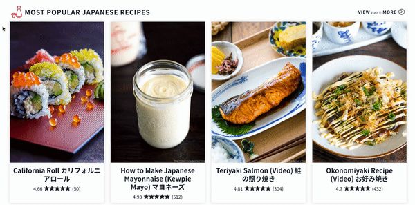
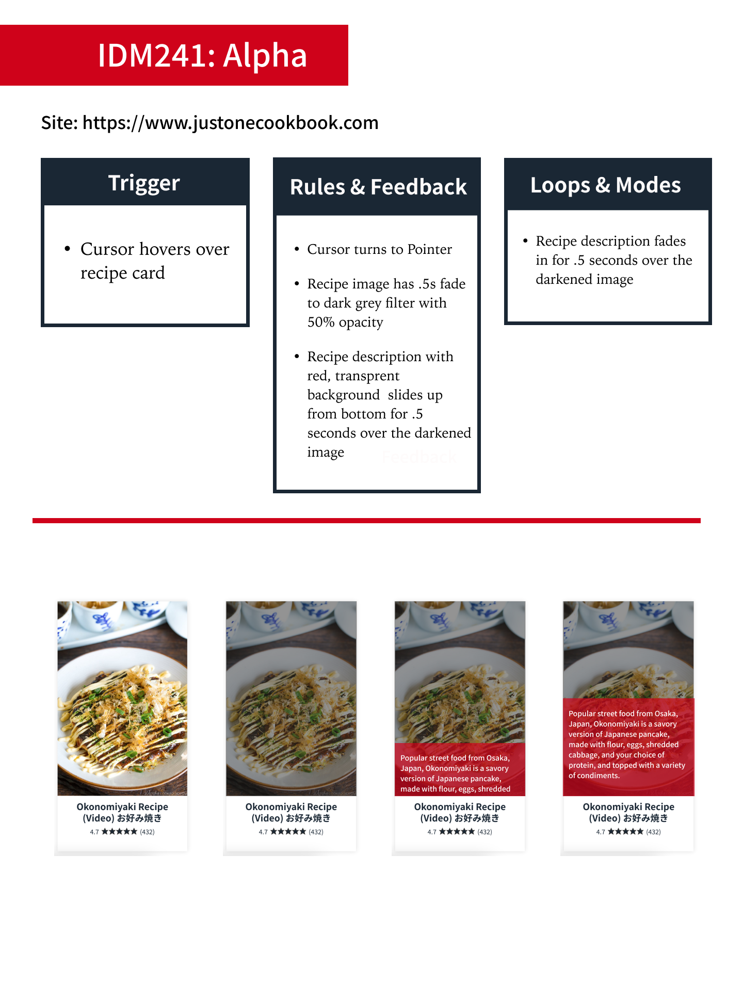

JUST ONE COOKBOOK

Adobe After Effects
Figma
Visual Studio Code
10 weeks
This case study outlines the process I went through to create a multi-layered microinteraction for Just One Cookbook. Starting with a simplified hover, I gradually added more functionality for when a user interacts with one of JOC’s featured recipe cards. I was able to start out coding using basic knowledge of coding, but as I developed and approached the final result, I was able to polish my skills in HTML, CSS, and basic Javascript and apply them in creating meaningful interactions for users.
This project was started as an assigned task in my IDM241 class on Microinteractions. In this class we learned how interactions can be meaningful to a user’s physical and digital experience and draw them into using a service or product. We broke down microinteractions into their four-part structure: triggers, rules, feedback, loops & modes.
We learned how to not only define microinteractions, but also how to apply them in our own work and define our process. We were tasked to apply what we learned over the course of ten weeks to an existing microinteraction of our choosing, and improve upon it to benefit users.
This task was designed to not only make sure that we understand the fundamentals of designing a pleasing interaction, but also to combine our learned skills of past coding to create a functioning example of our microinteractions. To keep with the flow of the course, I needed to choose an interaction that could be iterated upon without becoming overwhelming for the user while also improving the user’s experience.
When starting this project, I needed to choose an interaction that I could iterate on without it becoming too overwhelming for a casual user on the site. My first thoughts were to do a drop-down or navigation bar, but I wanted to push myself a bit further. My eyes landed on a recipe site that I’ve enjoyed in the past, Just One Cookbook. They had two styles of recipe cards on their homepage: one wide-style which included a brief summary, and one long-style which included only the name, and rating. Because the long card is used for featured and popular items, I thought it was strange that they did not include any form of summary for them. It was this observation that led me to choose the interaction of hovering on a featured recipe card, to make more information readily available to the user.
The alpha was my first build of this interaction; we were required to have at least one trigger. While I had the option to choose different interactions for each stage of development, I wanted to see the development of one complex interaction over the course of our ten weeks, so I began with a simple hover animation. When the user hovers over the recipe card, instead of the recipe name turning red, the image would darken, and the recipe description would slide up from the bottom on a red overlay. For this first interaction, I wanted to keep it as simple as I could while still challenging myself. I’d attempted to do hover states with sliding overlays in the past unsuccessfully, and this time I’d be attempting to do the same thing in a smaller area within a card. So before I started to build, I described the triggers, rules, feedback, and loops & modes that this interaction would use, and built myself a wireframe with step-by-step images of how it would look.
Using resources like W3, I was able to successfully apply a sliding overlay over the text. I believe using an animation library would’ve made this task much simpler and is something I strive to learn to use going forward. After carefully adjusting the positioning of the text within the overlay, I was able to make the overlay slide into view when the user hovers on the recipe card.
The Beta was my next iteration of this interaction; we were required to have at least three triggers included. Now that I had solved my initial problem of providing a recipe summary for featured images, I started to think about functionality I could add that would benefit users. I know that for me, JOC is a website that I frequent for new recipes and I would love to be able to quickly save recipes. For my next iteration, I decided to include a button that would allow a user to quickly save a recipe on the home screen to their library to revisit. I followed my previous steps of defining my microinteraction’s anatomy, creating a wireframe, and creating step-by-step images of how it would appear.
My big challenge with this interaction was that it was going to require functionality on a button click, and require a custom animation to play on click at the same time. This meant that I was going to need to challenge my understanding of Javascript to accomplish this task. With more time to work, I would’ve created a bookmark svg and animated it using css, but because my time was limited, I opted to create my animation in after effects. By alternating between a moving and static version of the bookmark, I was able to get it to appear over the bookmark when clicked, and disappear right afterward. I utilized the setTimeout feature to make sure that the save button and save text change would happen while the bookmark covered the button. With more time, I would clean up the javascript I created to be more streamlined, but I was able to successfully create this animation in conjunction with the previous interaction.
View Beta BuildMy final task was to create an interaction with a minimum of five triggers. My first two steps addressed a function that was lacking, and a need that I wanted, so I decided for the final to focus on a desire that other users may have use for. Not every user wants to click on a recipe and scroll all the way to the bottom to find out if they can eat it or not, so I wanted to include a way to quick-view basic nutritional information. I considered a series of designs (nearly settling on a set of icons that would alert if a recipe is vegan, gluten free, high sodium, or other information) but I considered that this is still a single recipe card, and I didn’t want to overwhelm the user with information. In the end, I decided to add a button that would add this information on the reverse side of the recipe card.
Since I had already implemented javascript earlier in my process, I decided to use it again to make my new button apply and remove a flip animation when pressed. I used a guide to create a flip card on hover and nest my html, and I used logic to change the hover into an on-click interaction with javascript. Since the back of the flip card uses a different set of code than the front, I was able to have new buttons with new functions on the other side to make sure it goes back without causing errors.
In the end, I was able to accomplish the tasks I outlined in my descriptions for every build, and my end product was a layered and complex microinteraction designed to give users a convenient homepage experience. I felt proud of my ability to accomplish my goals, especially because I was frequently met with challenges that I wasn’t sure if I’d be able to meet. I tried a lot of new techniques that I hadn’t been familiar with, and with a short timeframe, I was glad that patience and research allowed me to figure out how to accomplish goals. If I had more time, I would like to learn how to utilize animation libraries to simplify animation process like the card flip and saving animation. I’d also like to learn how to condense my javascript and make it much neater. I enjoyed applying my observations about the site into changes that improve user experience. Overall, I successfully developed my microinteractions to a state that I feel befits a featured recipe card.